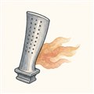

第2巻 だい7わ ── ねつの章とける温度より、あつい部屋
40倍に縮めた空気に、いよいよ火を入れます。ここで熱力学の意地悪な事実——タービンに入るガスは熱いほど、エンジンは強く・効率よくなる。だから設計者はガス温度を上げ続け、現代のエンジンではタービン入口温度は1900K（約1600℃）級。ところがタービン翼のニッケル超合金は、その温度では溶けてしまいます。融点より熱いガスの中で、翼は高速回転しながら何万時間も働く——今日は、そのありえない両立の種明かしです。
種は2つ。火を暴れさせない部屋（燃焼器）と、涼しさを着る翼（タービン）。まず部屋から一周しましょう。
主役はやはりタービン動翼です。融点超えのガスに突っ込まれて生き延びるために、翼は三枚の「涼しさ」を重ね着しています。
よりみち1枚で、F1カー1台ぶん
Trent XWBの高圧タービンには68枚の動翼が並び、離陸時には1枚あたり約900馬力——F1カー1台ぶんの動力を取り出しています（Aviation Week）。しかもその1枚は、融点超えのガスに炙られ、猛烈な遠心荷重を受けながらの仕事です。金属側の切り札が単結晶鋳造——翼をまるごと1つの結晶として鋳ることで、高温でひずみの起点になる結晶粒界そのものを消してしまう。じわじわ伸びる劣化（クリープ）への、材料屋の見事な返し技です。タービン翼が「工業製品の宝石」と呼ばれるのは、価格のせいだけではありません。
よりみち火を、その場に留める
燃焼器の中の流速で、ただ火を点けたら即座に吹き消えます。そこで入口のスワーラが空気に旋回を与え、部屋の中央に逆流する渦だまり（再循環域）を作る——火種はこの静かな渦に住み着いて、後から来る混合気に次々火を渡します。「保炎」という漢字二文字の裏には、渦で火を飼うという流体屋の仕事がある。壁のライナは無数の小孔から空気の膜をまとって焼損を防ぎます——第1巻第6話でロケットのフィルム冷却を見ましたが、ロケットは燃料で、ジェットは空気で。冷やす媒体は違えど、壁の数ミリの攻防は同じ言葉で書かれています。
 流体屋のためのノート
流体屋のためのノート
タービン冷却は内部対流・衝突噴流・TBCまで含む共役伝熱の総合戦で、外側のフィルム冷却はまさに境界層制御です。フィルム冷却の性能は吹き出し比（冷却流と主流の質量流束比。運動量流束比も別途効きます）で峠を越え、吹きすぎれば膜が主流に突き抜けて剥がれる——「守るための噴流が守りを壊す」非線形が現場の悩みどころ。設計は共役熱伝達（CHT）解析で金属温度を10K単位で追い込みます。金属温度が10〜20K下がるとクリープ寿命が倍近く変わる世界（時間‐温度の等価則）なので、この10Kは誇張ではなく通貨です。冷却空気は圧縮機から拝借した「タダではない空気」——使うほどサイクル効率は落ちるので、冷やしすぎも罪。熱いガス・冷たい空気・回る構造の三つ巴の最適化が、この部屋の日常です。次話は、この機械が歌う声と、ふるえの話。
{kind=link}
・タービン入口温度・冷却: Wikipedia "Turbine blade"（TET 1900K級・合金融点超え）
・Trent XWB 1枚900馬力: Aviation Week "Six Facts About The Trent XWB Engine"
・N. Cumpsty, Jet Propulsion（燃焼器・タービン冷却）